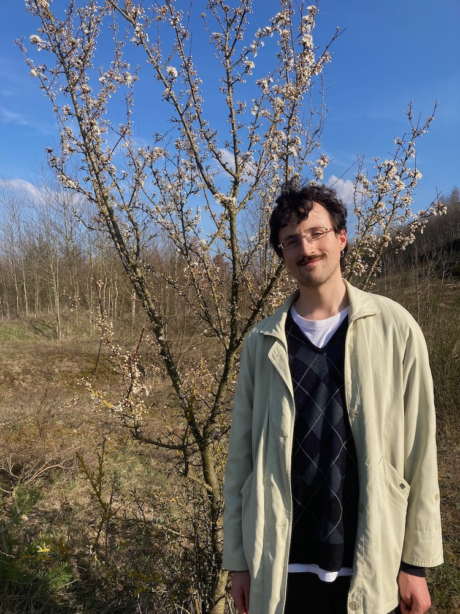

ɻ alejandro cassis ❦
Hi~~~ i am a last year {PhD student} at Saarland University and
the Max Planck Institute for Informatics.
I am lucky to be advised by Karl Bringmann.
I was born and raised in La Paz, Bolivia.
Some lives ago I did my bachelors degree in México.

I am broadly interested in theoretical computer science;;;
~~ my research has focused mainly on theoretical and mathematical aspects
of algorithm design for {strings and combinatorial optimization} problems.
Here are two research highlights:
🪡🪡 In [
BC'22,
BC'23] we give some of the currently best-known algorithms
for the classic
knapsack problem. our results leverage modern
algorithmic tools related to (min,+)-convolutions.
🪡🪡 In [
BCFN'22] we give the best-known algorithm to estimate the
edit distance between texts in a setting where we do not read the
entire input (aka sublinear-time algorithms). our algorithm makes use
of several sampling and property testing techniques.